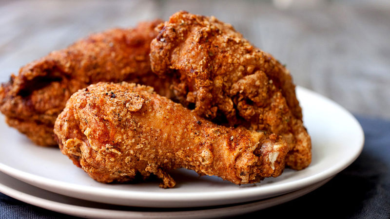

How to make KFC chicken

Description
They said it couldn’t be done—but dare we say our homemade version of KFC™ fried chicken is better than the original recipe?
We start with a flavorful combination of 11 spices you already have in your pantry and combined them with flour and brown sugar to create the makings of that savory KFC™ crunch you crave.
After that, it doesn’t get any easier than dredging the chicken and frying it up in hot oil.
Ingredients
- 1 tablespoon paprika
- 2 teaspoons onion salt
- 1 teaspoon chili powder
- 1 teaspoon black pepper
- 1/2 teaspoon celery salt
- 1/2 teaspoon dried sage
- 1/2 teaspoon garlic powder
- 1/2 teaspoon ground allspice
- 1/2 teaspoon dried oregano
- 1/2 teaspoon dried basil
- 1/2 teaspoon dried marjoram
- 1/2 cups Gold Medal™ all-purpose flour
- 1 tablespoon brown sugar
- 1 tablespoon kosher salt
- 1 whole chicken (2 breasts, 2 thighs, 2 drumsticks, 2 wings)
- 1 egg white
- 2 quarts neutral oil, for frying
Steps
- Preheat fryer to 350°F. Thoroughly mix together all spices.
- Combine spices with flour, brown sugar and salt.
- Dip chicken pieces in egg white to lightly coat them, then transfer to flour mixture.
Turn a few times and make sure the flour mix is really stuck to the chicken. Repeat with all the chicken pieces.
- Let chicken pieces rest for 5 minutes so crust has a chance to dry a bit.
- Fry chicken in batches. Breasts and wings should take 12-14 minutes, and legs and thighs will need a few more minutes.
Chicken pieces are done when a meat thermometer inserted into the thickest part reads 165°F.
- Let chicken drain on a few paper towels when it comes out of the fryer. Serve hot.